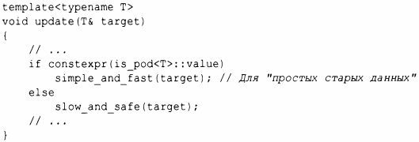
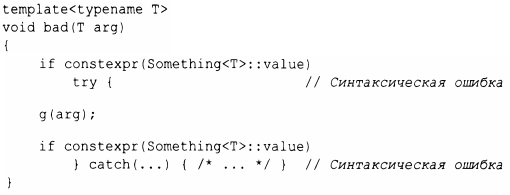

Рассмотрим запись операции, которая может использовать один из двух вариантов операции- slow_and_safe (Т) или simple and_fast (Т). Такие проблемы часто встречаются в коде, где важны обобщенность и производительность. Традиционное решение состоит в том, чтобы написать пару перегруженных функций и выбирать наиболее подходящую на основе свойства (§ 13.9.1 ), такого как, например, свойство стандартной библиотеки is_pod. При использовании иерархии классов базовый класс может обеспечить общую операцию slow_and_safe, а производный класс - перекрыть ее реализацией simple_and_fast.
В С++ 17 можно просто использовать if времени компиляции:
is_pod<T> - это свойство типа (§ 13.9.1), которое говорит нам о том, может ли этот тип быть тривиально копирован.
Инстанцируется только выбранная ветвь if constexpr. Это решение предлагает оптимальную производительность и локальность оптимизации.
Что важно, if constexpr не является механизмом манипуляции текстом и не может нарушать обычные правила грамматики, типов и областей видимости. Например:
Разрешение таких манипуляций текстом может серьезно подорвать удобочитаемость кода и создать проблемы для инструментов, основанных на современных методах представления программ (таких, как "абстрактные синтаксические деревья").